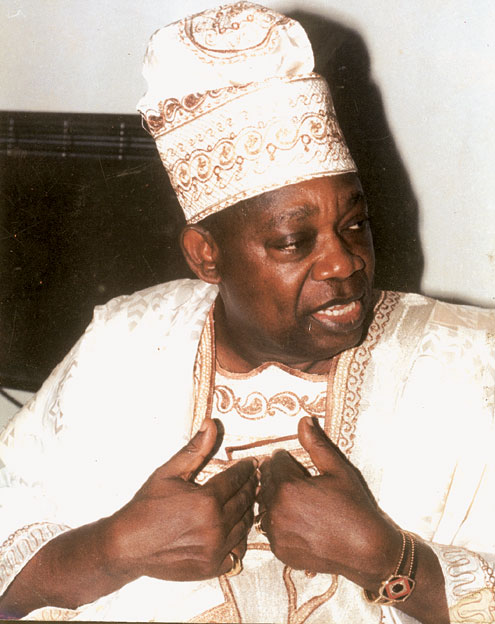

1937 – 1998
"Because of this man, there is both cause for hope and certainty that the agony and protests of those who suffer injustice shall give way to peace and human dignity. The children of the world shall know the great work of this extraordinary leader and his fervent mission to right wrong, to do justice, and to serve mankind. The enemies which imperil the future of generations to come: poverty, ignorance, disease, hunger, and racism have each seen effects of the valiant work of Chief Abiola. Through him and others like him, never again will freedom rest in the domain of the few. We, the members of the Congressional Black Caucus salute him this day as a hero in the global pursuit to preserve the history and the legacy of the African diaspora."
M. K. O. Abiola was born in Abeokuta, Ogun State to the family of Salawu and Suliat Wuraola Abiola. His father was a produce trader who primarily traded cocoa, and his mother traded in kola nuts. His name, Kashimawo, means "Let us wait and see". Moshood Abiola was his father's twenty-third child, but the first of them to survive infancy, hence the name 'Kashimawo'. It was not until he was fifteen that he was properly named Moshood by his parents. Abiola attended African Central School, Abeokuta for his primary education. As a young boy, he assisted his father in the cocoa trade, but by the end of 1946, his father's business venture was failing precipitated by the destruction of a cocoa consignment declared by a produce inspector to be of poor quality grade and unworthy for export and to be destroyed immediately.
At the age of nine, he started his first business selling firewood gathered in the forest at dawn before school, to support his father and siblings. Abiola founded a band at the age of fifteen and would perform at various ceremonies in exchange for food. Abiola was eventually able to require payment for his performances, and used the money to support his family and his secondary education at the Baptist Boys High School Abeokuta. Abiola was the editor of the school magazine The Trumpeter, Olusegun Obasanjo was deputy editor. At the age of 19, he joined the National Council of Nigeria and the Cameroons ostensibly because of its stronger pan-Nigerian origin compared with the Obafemi Awolowo-led Action Group. In 1960, he obtained a government scholarship to study at the University of Glasgow, where he later earned a degree in accountancy and qualified as a chartered accountant. He later became a Fellow of the Institute of Chartered Accountants of Nigeria (ICAN).
In 1956 Moshood Abiola started his professional life as a bank clerk with Barclays Bank in Ibadan, South-West Nigeria. Afte5r two years he joined the Western Region Finance Corporation as an executive accounts officer, before leaving for Glasgow, Scotland, to pursue his higher education. From Glasgow University he received a first class degree in accountancy, and he also gained a distinction from the Institute of Chartered Accountants of Scotland. On his return to Nigeria, Abiola worked as a senior accountant at the University of Lagos Teaching Hospital, then went on to US firm Pfizer, before joining the ITT Corporation, where he later rose to the position of vice-president, Africa and Middle-East. Abiola spent a lot of his time, and made most of his money, in the United States, while retaining the post of chairman of the corporation's Nigerian subsidiary.
Abiola's involvement in politics started early on in life when he joined the National Council of Nigeria and the Cameroons (NCNC) at age 19. In 1979, the military government kept its word and handed over power to the civilian. As Abiola was already involved in politics, he joined the ruling National Party of Nigeria (NPN) in 1980 and was elected the state chairman of his party. Re-election was done in 1983 and everything looked promising since the re-elected president was from Abiola's party and based on the true transition to power in 1979; Abiola was eligible to go for the post of presidential candidate after the tenure of the re-elected president. However, his hope to become the president was shortly dashed away for the first time in 1983 when a military coup d'état swept away the re-elected president of his party and ended civilian rule in the country.
Chief M.K.O. Abiola's memory is celebrated in Nigeria and internationally. Since his death, the Lagos State Government declares June 12 as a public holiday. In 2018, other states including Ogun, Oyo and Osun, announced June 12 as a public holiday to celebrate the 25th anniversary of the annulled 1993 presidential election. June 12 remains a public holiday in Nigeria beginning 12 June 2019, it will be celebrated as democracy day, replacing May 29. Remembrance events are arranged across Nigeria. MKO Abiola Stadium and Moshood Abiola Polytechnic were named in his honour, and there were calls for posthumous presidential recognition. A statue, MKO Abiola Statue was erected in his honour.
Moshood Abiola was twice voted international businessman of the year, and received numerous honorary doctorates from universities all over the world. In 1987 he was bestowed with the golden key to the city of Washington, D.C., and he was bestowed with awards from the NAACP and the King center in the US, as well as the International Committee on Education for Teaching in Paris, among many others. In Nigeria, the Oloye Abiola was made the Aare Ona Kakanfo of Yorubaland, the highest chieftaincy title available to commoners amongst the Yoruba. At the point when he was elevated, the title had only been conferred by the tribe thirteen times in its long history. This in effect rendered Abiola the ceremonial War Viceroy of all of his tribespeople. According to the folklore of the tribe as recounted by the Yoruba elders, the Aare Ona Kakanfo is expected to die a warrior in the defence of his nation to prove himself in the eyes of both the divine and the mortal as having been worthy of his title. He was posthumously awarded the third highest national honour, the Commander of the Federal Republic, in 1998. He was also awarded the highest national honor, the Grand Commander of the Federal Republic – or GCFR – in 2018. The date of the annulled election, June 12, was also made Nigeria's Democracy Day.
Moshood Abiola died unexpectedly, shortly after the death of General Abacha, on the day that he was due to be released. While meeting group of American diplomats including Thomas Pickering and Susan Rice at a government guesthouse in Abuja, Abiola fell ill and died. Rice had served tea to Abiola shortly before his collapse, and later wrote of an enduring belief in Nigeria that she had poisoned Abiola.